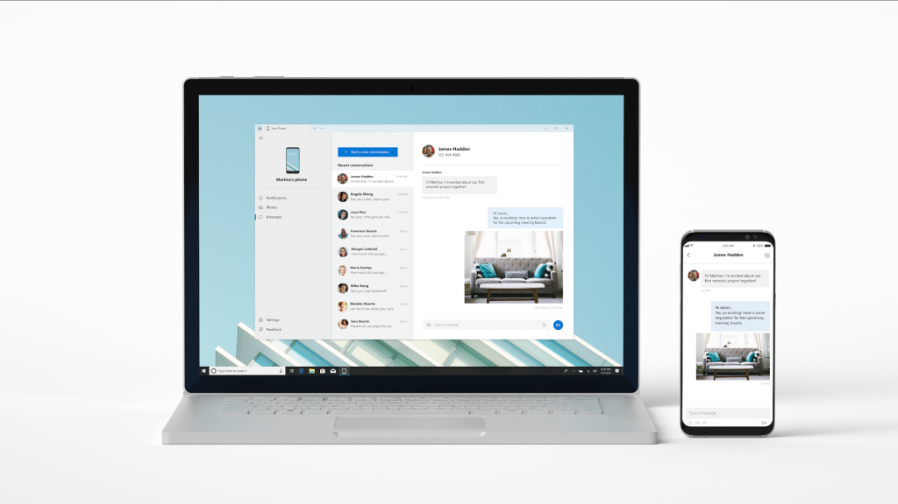

Noticias del mundo Geek:
tecnología, videjuegos, lo último en comic, cine y series, todo lo que puede interesarte
si eres uno de esos frikis que "le da a todo ;)"
En Build 2018 Microsoft se centra en la inteligencia artificial y la nube
(y se olvida de Windows 10)
Los desarrolladores siguen siendo parte fundamental de la estrategia de Microsoft, y la empresa quiere que
todos ellos pongan su foco en un ámbito cada vez más prometedor: el de la inteligencia artificial. Es
lo que han mostrado en la conferencia inaugural de Build 2018, su conferencia para desarrolladores. Allí
hemos visto cómo el futuro está marcado por la conquista de la IA en todas las áreas. También hemos visto
cómo Windows 10 queda relegado a un segundo plano absoluto.
La IA como base de soluciones de accesibilidad
La inteligencia artificial está cada vez más presente en todo tipo de ámbitos, pero en Microsoft nos
hablaban hoy de un enfoque distinto centrado absolutamente en la accesibilidad y en soluciones que
faciliten la vida de personas con ciertas discapacidades.
Es el caso del lanzamiento en 2017 de Seeing AI, un sistema que permite que la cámara del móvil "describe"
lo que ve a personas ciegas o con dificultades visuales severas. En Microsoft también hablaron de
otros ejemplos como Helpicto, orientado a personas con autismo El sistema Alt Text de Microsoft Office
es otro de esos desarrollos en los que la inteligencia artificial se centra en la accesibilidad.
La idea es la de facilitar la inclusión de textos alternativos en nuestros documentos para describir
las imágenes y gráficos que incluimos en ellos.
Tu móvil pasa a la pantalla de tu PC con 'Your Phone', que viva la magia del mirroring en Windows 10

Microsoft ha presentado una nueva aplicación en su conferencia Build 2018: se trata de 'Your Phone' ('Tu
Teléfono'), que permite hacer mirroring de la pantalla de nuestro smartphone Android o iOS y controlarlo
con el ratón y teclado de nuestro PC con Windows 10. La herramienta permite acceder a los mensajes
de texto, fotos y notificaciones que tenemos en nuestro móvil desde Windows 10: contestar a esos
mensajes o arrastrar fotos de un dispositivo a otro será a partir de ahora mucho más fácil con esta
herramienta.
Referencia: Xataka
Vengadores: Infinity War, 1.000 millones en 11 días

Rompe un récord tras otro.
Ahora, como decimos, ha superado a "Star Wars: El despertar de la fuerza" como la película que menos ha tardado en alcanzar
los mil millones de recaudación, empleando apenas 11 días en lograrlo. Con esa marca, en tan solo 11 jornadas, ya
ha recaudado más que lo que generaron en total otros éxitos cinematográficos basados en los cómics como Wonder Woman,
Batman v Superman: El amanecer de la justicia, Guardianes de la galaxia, X-Men: Días del futuro pasado y La Liga
de la Justicia.
Referencia: Tikitakas